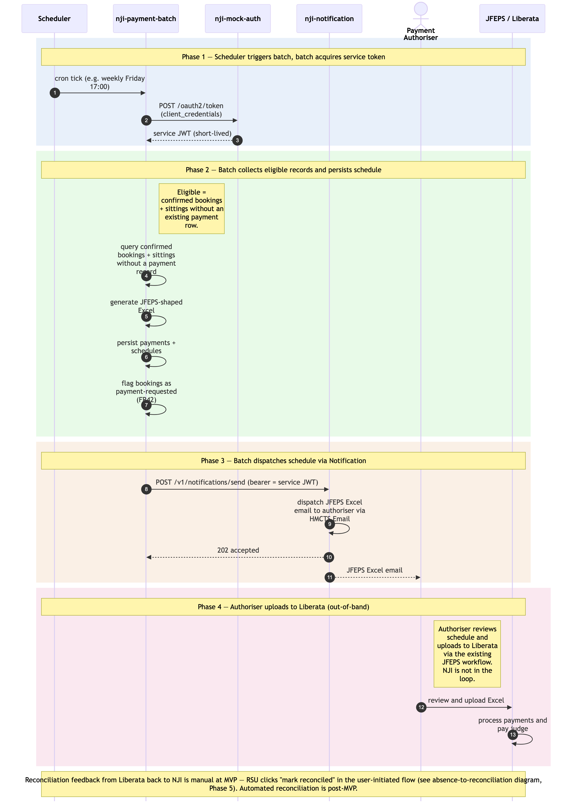

Payment-batch flow
Sequence diagram of the scheduled, non-user-initiated half of the operational cycle. A scheduler triggers the payment-processing batch. The batch authenticates as a service principal, picks up bookings/sittings that are confirmed but unpaid, generates the JFEPS Excel, and dispatches it via Notification → HMCTS Email to the Payment Authoriser. The authoriser uploads to Liberata out-of-band; Liberata pays the JOH.
SSCS applicability verified (2026-06-11, per SCP 2026-06-10 / D11): this flow is preserved unchanged for SSCS wave 1 — tribunal-member payments (Medical, Disability-Qualified, Disability (Other) members) use the same JFEPS Excel + email-to-Authoriser + Liberata path as Courts fee-paid bookings (NFR21 amended 2026-06-10). No SSCS-specific variation to the batch, the schedule shape, or the dispatch mechanism.
Companion to ./absence-to-reconciliation.md. The user-initiated flow ends with a booking marked confirmed and ready for payment; this batch picks up the record on its next scheduled run.
Four phases: (1) scheduler + batch authentication; (2–3) the batch's work; (4) out-of-band processing in Liberata. Phases are colour-tinted in the diagram.
What is and isn't in this diagram
Included (the batch's runtime activity):
- Scheduler trigger (Kubernetes CronJob, or Spring
@Scheduledannotation — implementation choice deferred). - Batch acquiring its service-principal token via OAuth
client_credentialsagainstram-mock-auth(non-prod) — production issuer per../gaps.mdG7.1, default recommendation Azure Workload Identity. - Batch SQL-JOIN read across the shared schema for eligible records.
- Batch persisting
ram_payments+ram_payment_schedulesand marking the related bookings as payment requested. - Batch calling the Notification API (with bearer service token) to dispatch the JFEPS Excel email.
- Authoriser → Liberata upload as the bridge between RAM Pathfinder and the external payment system (out-of-band but architecturally relevant).
- Liberata processing the payment.
Not included (explicitly out of scope of this diagram):
- User-initiated activities (logging absences, approving them, creating bookings, confirming sittings, marking payments reconciled) — those are in
./absence-to-reconciliation.md. - Reconciliation feedback from Liberata back into RAM Pathfinder — at MVP this is a manual RSU action (see the user-initiated diagram, Phase 5). Automated reconciliation feed from Liberata is post-MVP.
- The mock-auth's internal token-issuing logic (signing, JWKS, etc.) — covered by the architecture's Authentication & Security section and the auth/JWKS sequences in
architecture.md.
Cross-cutting steps omitted for clarity
- The Notification API call from the batch to
ram-notificationflows through Azure API Management (same path as user-initiated calls). - Notification's
JWTFiltervalidates the batch's service-principal JWT against the issuer's JWKS — same mechanism as for human user JWTs. - Notification calls
ram-authorisationPOST /authz/checkto resolve the service principal's permissions (service principals have records inram_auth_userswith a kind flag distinguishing them from humans).

Source: ./payment-batch-flow.mmd (Mermaid). Regenerate with mmdc -i payment-batch-flow.mmd -o payment-batch-flow.png -w 2400 -s 2 --backgroundColor white.
Phase summary
| Phase | Driver | Architectural rule | Outcome |
|---|---|---|---|
| 1 — Scheduler triggers batch + token acquisition | Scheduler (cron) | Batch authenticates as service principal via OAuth client_credentials |
Batch holds a short-lived service JWT for its run |
| 2 — Eligible records collected + schedule persisted | Batch (no user) | SQL JOIN over confirmed bookings + sittings without payments; FR41–FR45 retry safety via native DB primitives (see Data Architecture) | Payment + schedule rows created; bookings flagged as payment-requested |
| 3 — Schedule dispatched | Batch (no user) | Service-token bearer on Notification API call; Notification JWTFilter validates same as user JWTs (via JWKS) |
JFEPS Excel email delivered to Payment Authoriser |
| 4 — Liberata processing | Payment Authoriser → JFEPS | Out-of-band; RAM Pathfinder is not in the loop | JOH paid; awaiting reconciliation (which is user-initiated — see other diagram) |
Where to find more detail
| Detail | Location |
|---|---|
| User-initiated activities — absence to reconciliation | ./absence-to-reconciliation.md |
| Service-principal auth model + production issuer options | ../../architecture.md → Step 4 Authentication & Security; ../gaps.md G1.2 + G7.1; ../assumptions.md A2 + A26 + A35 |
ram-payment Repository List entry — synchronous API + batch component |
../../architecture.md → Repository List |
Per-table column-level detail (ram_payments, ram_payment_schedules, ram_payment_reconciliations, ram_notification_dispatches, mock_oauth_clients) |
../data-tables.md |
| FR41–FR45 (Payment) and NFR12 (Authentication) | PRD FR41, FR42, FR43, FR44, FR45, NFR12 |
| JWT propagation (the user-initiated counterpart pattern) | ../conventions.md → Communication Patterns / JWT propagation |
Source: _bmad-output/planning-artifacts/architecture/sequence-diagrams/payment-batch-flow.md